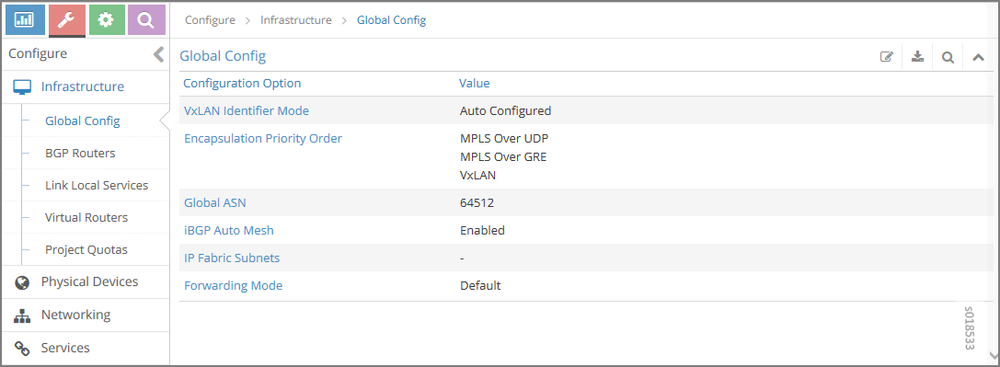
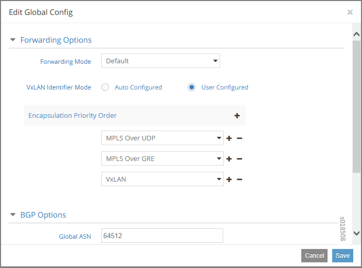
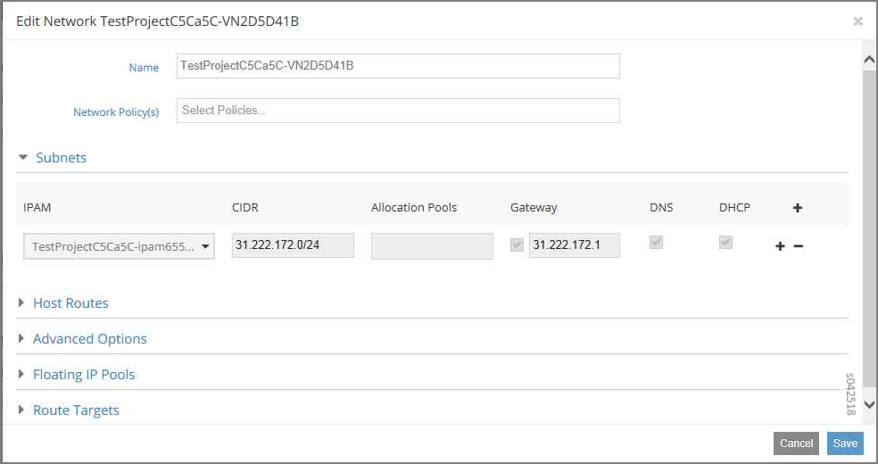

Contrail supports Ethernet VPNs (EVPN) and Virtual Extensible
Local Area Networks (VXLAN).
EVPN is a flexible solution that uses Layer 2 overlays to interconnect
multiple edges (virtual machines) within a data center. Traditionally,
the data center is built as a flat Layer 2 network with issues such
as flooding, limitations in redundancy and provisioning, and high
volumes of MAC address learning, which cause churn during node failures.
EVPNs are designed to address these issues without disturbing flat
MAC connectivity.
In EVPNs, MAC address learning is driven by the control plane,
rather than by the data plane, which helps control learned MAC addresses
across virtual forwarders, thus avoiding flooding. The forwarders
advertise locally learned MAC addresses to the controllers. The controllers
use MP-BGP to communicate with peers. The peering of controllers using
BGP for EVPN results in better and faster convergence.
With EVPN, MAC learning is confined to the virtual networks
to which the virtual machine belongs, thus isolating traffic between
multiple virtual networks. In this manner, virtual networks can share
the same MAC addresses without any traffic crossover.
Unicast in EVPNs
Unicast forwarding is based on MAC addresses where traffic can
terminate on a local endpoint or is encapsulated to reach the remote
endpoint. Encapsulation can be MPLS/UDP, MPLS/GRE, or VXLAN.
BUM Traffic in EVPN
Multicast and broadcast traffic is flooded in a virtual network.
The replication tree is built by the control plane, based on the advertisements
of end nodes (virtual machines) sent by forwarders. Each virtual network
has one distribution tree, a method that avoids maintaining multicast
states at fabric nodes, so the nodes are unaffected by multicast.
The replication happens at the edge forwarders. Per-group subscription
is not provided. Broadcast, unknown unicast, and multicast (BUM) traffic
is handled the same way, and gets flooded in the virtual network to
which the virtual machine belongs.
VXLAN
VXLAN is an overlay technology that encapsulates MAC frames
into a UDP header at Layer 2. Communication is established between
two virtual tunnel endpoints (VTEPs). VTEPs encapsulate the virtual
machine traffic into a VXLAN header, as well as strip off the encapsulation.
Virtual machines can only communicate with each other when they belong
to the same VXLAN segment. A 24-bit virtual network identifier (VNID)
uniquely identifies the VXLAN segment. This enables having the same
MAC frames across multiple VXLAN segments without traffic crossover.
Multicast in VXLAN is implemented as Layer 3 multicast, in which endpoints
subscribe to groups.
Design Details of EVPN and VXLAN
In Contrail Release 1.03 and later, EVPN is enabled by default.
The supported forwarding modes include:
Fallback bridging—IPv4 traffic lookup is performed
using the IP FIB. All non-IPv4 traffic is directed to a MAC FIB.
Layer 2-only— All traffic is forwarded using a MAC
FIB lookup.
You can configure the forwarding mode individually on each virtual
network.
EVPN is used to share MAC addresses across different control
planes in both forwarding models. The result of a MAC address lookup
is a next hop, which, similar to IP forwarding, points to a local
virtual machine or a tunnel to reach the virtual machine on a remote
server. The tunnel encapsulation methods supported for EVPN are MPLSoGRE,
MPLSoUDP, and VXLAN. The encapsulation method selected is based on
a user-configured priority.
In VXLAN, the VNID is assigned uniquely for every virtual network
carried in the VXLAN header. The VNID uniquely identifies a virtual
network. When the VXLAN header is received from the fabric at a remote
server, the VNID lookup provides the VRF of the virtual machine. This
VRF is used for the MAC lookup from the inner header, which then provides
the destination virtual machine.
Non-IP multicast traffic uses the same multicast tree as for
IP multicast (255.255.255.255). The multicast is matched against the
all-broadcast prefix in the bridging table (FF:FF:FF:FF:FF:FF). VXLAN
is not supported for IP/non-IP multicast traffic.
The following table summarizes the traffic and encapsulation
types supported for EVPN.
Encapsulation
MPLS-GRE
MPLS-UDP
VXLAN
Traffic Type
IP unicast
Yes
Yes
No
IP-BUM
Yes
Yes
No
non IP unicast
Yes
Yes
Yes
non IP-BUM
Yes
Yes
No
Configuring the VXLAN Identifier Mode
You can configure the global VXLAN identifier mode to select
an auto-generated VNID or a user-generated VXLAN ID, either through
the Contrail Web UI or by modifying a python file.
To configure the global VXLAN identifier mode:
From the Contrail Web UI, select Configure > Infrastucture
> Global Config.
The Global Config options and values are displayed in the Global
Config window.
Figure 1: Global Config Window for VXLAN ID

Click the edit icon .
The Edit Global Config window is displayed as shown in Figure 2.
Figure 2: Edit Global Config Window
for VXLAN Identifier Mode

Select one of the following:
Auto Configured— The VXLAN identifier
is automatically assigned for the virtual network.
User Configured– You must provide the
VXLAN identifier for the virtual network.
Note
When User Configured is selected, if you do
not provide an identifier, then VXLAN encapsulation is not
used and the mode falls back to MPLS.
Alternatively, you can set the VXLAN identifier mode by using
Python to modify the /opt/contrail/utils/encap.py file as follows:
In Contrail, the default forwarding mode is enabled for
fallback bridging (IP FIB and MAC FIB). The mode can be changed, either
through the Contrail Web UI or by using python provisioning commands.
To change the forwarding mode:
From the Contrail Web UI, select Configure > Networking
> Networks.
Select the virtual network that you want to change the
forwarding mode for.
Click the gear icon and
select Edit.
The Edit Network window is displayed as shown in Figure 3.
Figure 3: Edit Network Window

Under the Advanced Options select the forwarding mode
from the following choices:
Select Default to enable the default forwarding
mode.
Select L2 and L3 to enable IP and MAC FIB (fallback
bridging).
Select L2 Only to enable only MAC FIB.
Select L3 Only to enable only IP.
Note
The full list of forwarding modes are only displayed if
you change entries in the /usr/src/contrail/contrail-web-core/config/config.global.js file. For example:
To make the L2 selection available locate the
following:
l2_l3 = Enable IP FIB and MAC FIB
(fallback bridging)
l2 = Enable MAC FIB only (Layer 2
only)
Configuring the VXLAN Identifier
The VXLAN identifier can be set only if the VXLAN network
identifier mode has been set to User Configured. You can then set
the VXLAN ID by either using the Contrail Web UI or by using Python
commands.
To configure the global VXLAN identifier:
From the Contrail Web UI, select Configure > Networking
> Networks.
Select the virtual network that you want to change the
forwarding mode for.
Click the gear icon and
select Edit.
The Edit Network window is displayed. Select the Advanced
Options as shown in Figure 4.
Figure 4: Edit Network Window for
VXLAN Identifier
Type the VXLAN identifier.
Click Save.
Alternatively, you can use the following Python provisioning
command to configure the VXLAN identifier:
The default encapsulation mode for EVPN is MPLS over UDP. All
packets on the fabric are encapsulated with the label allocated for
the virtual machine interface. The label encoding and decoding is
the same as for IP forwarding. Additional encapsulation methods supported
for EVPN include MPLS over GRE and VXLAN. MPLS over UDP is different
from MPLS over GRE only in the method of tunnel header encapsulation.
VXLAN has its own header and uses a VNID label to carry the
traffic over the fabric. A VNID is assigned with every virtual network
and is shared by all virtual machines in the virtual network. The
VNID is mapped to the VRF of the virtual network to which it belongs.
The priority order in which to apply encapsulation methods is
determined by the sequence of methods set either from the Contrail
Web UI or in the encap.py file.
To configure the global VXLAN identifier mode:
From the Contrail Web UI, select Configure > Infrastucture
> Global Config.
The Global Config options are displayed.
Click the edit icon .
The Edit Global Config window is displayed as shown in Figure 5.
Figure 5: Edit Global Config
Window for Encapsulation Priority Order
Under Encapsulation Priority Order select one of the
following:
MPLS over UDP
MPLS over GRE
VxLAN
Click the + plus symbol to the right of the first priority to
add a second priority or third priority.
Use the following procedure to change the default encapsulation
method to VXLAN by editing the encap.py file.
Note
VXLAN is only supported for EVPN
unicast. It is not supported for IP traffic or multicast traffic.
VXLAN priority and presence in the encap.py file or configured in the Web UI is ignored for traffic not supported
by VXLAN.
To set the priority of encapsulation methods to VXLAN:
Modify the encap.py file
found in the /opt/contrail/utils/ directory.
 .
.